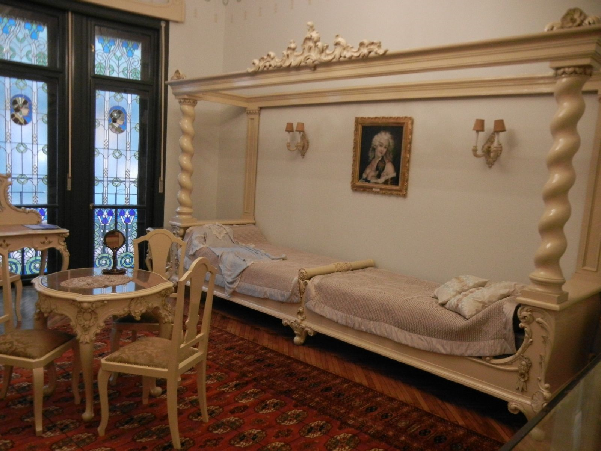

Casa Darvas - La Roche
Descriere
Casa Darvas-La Roche este o clădire din Oradea, construită în stil Secession vienez, excentrică, după proiectele arhitecților născuți la Oradea, József Vágó și László Vágó.
Casa Darvas are o orientare excelentă, cu deschidere pe două fronturi stardale, în zona centrală a orașului și spre zona de promenadă pe malul Crișului Repede, cu vedere spre Sinagoga Neologă Sion.